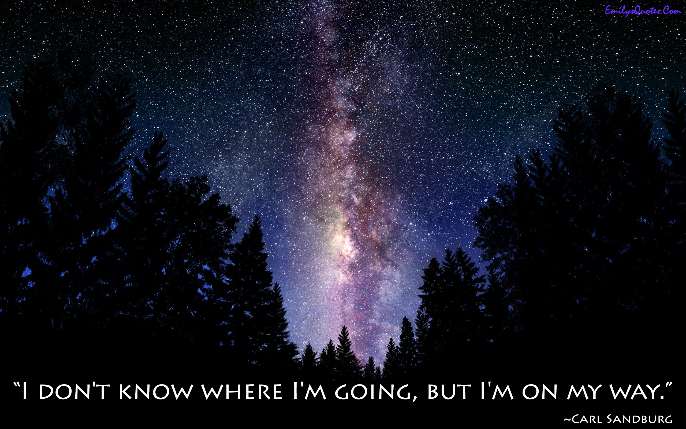

Cultural Blog: Week 7
Affirmation and Values
August 31, 2014
August 31, 2014
I just recently finished undergrad, and as I neared the end, I started to think about who would remain a close friend and who was just a friend of convenience.
In one sense, it's sad that we have to think of "friends" this way at all. Are friends of convenience even friends, or instead acquaintances? Anyways, it's a real thing and I was thinking about it. I realized that the best way to make the most of my last few months of college was to spend hours talking to my friends - the real ones - one-on-one. My parents reading this would probably say I'm crazy for proposing "talking one-on-one" as a new way of communicating. But compared to most superficial interactions at college, nowadays this kind of interpersonal, face-to-face communication is actually quite rare.
I measure life in joy as opposed to happiness, and I shouldn't say I was surprised by how much joy those few months of deep conversations with real friends gave me...but I was surprised by how much joy they gave me.
Here are FIVE THINGS I learned that I can try to apply to this week's blog post:
- Conversation doesn't have to be boring. I'm the kind of person who finds small-talk incredibly dull. I've come to realize that relationships are as good as you make them. Put in the effort, and they will flower.
- Be awesome today. Seriously. This one isn't even directly related. What does it mean to be awesome? To be interesting, unique, fulfilling. So every day, wake up and seriously make it awesome.
- I'm not actually stoned right now...but it's 3 in the morning and I'm slightly delirious. Please excuse typos, run-on sentences and Oxford commas.
- People come to me for relationship advice. Disclaimer: Everything I learned about love comes from Tolstoy. Credit where credit is due. 
- Speaking of Tolstoy - a (hopefully) insightful last word. The Russian authors may not be history's greatest writers, but I do believe they were our best psychologists. Dostoevsky never knew how his books would end when he began writing - he just followed what would naturally happen. Those books were published in monthly installments of chapters, and sometimes the most minor, tertiary characters ended up with starring roles by the end. How am I going to relate this back to the topic at hand? I believe a close relationship should develop naturally, like a slowly unfolding conversation deep within Crime and Punishment. You never know where it will end but it's almost always a surprise. And isn't that the best part?
I'm so sorry for including this. Vomit away.